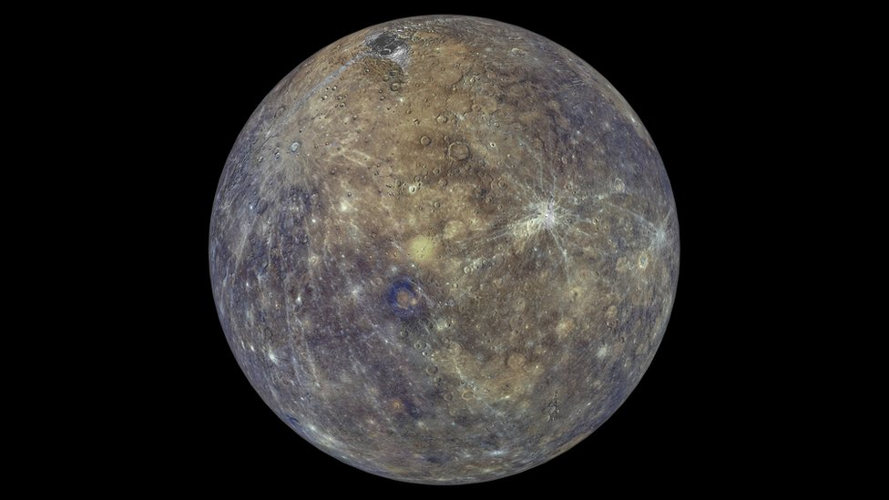
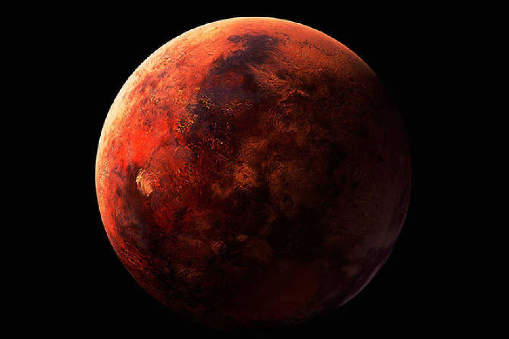
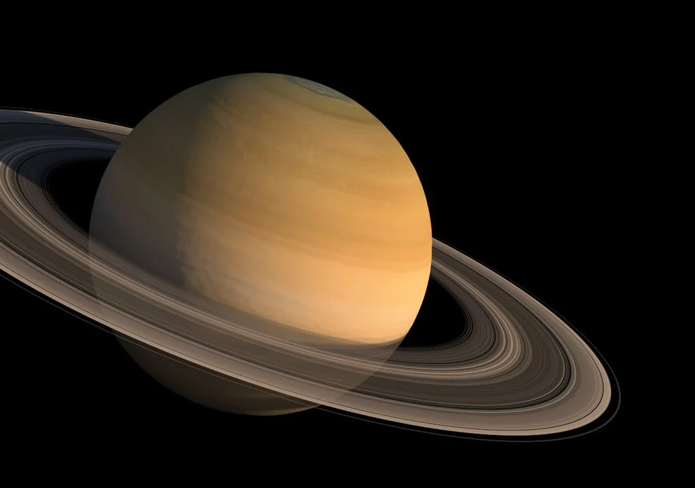
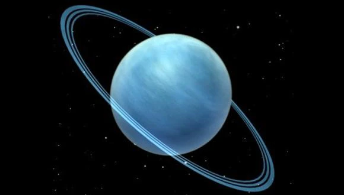
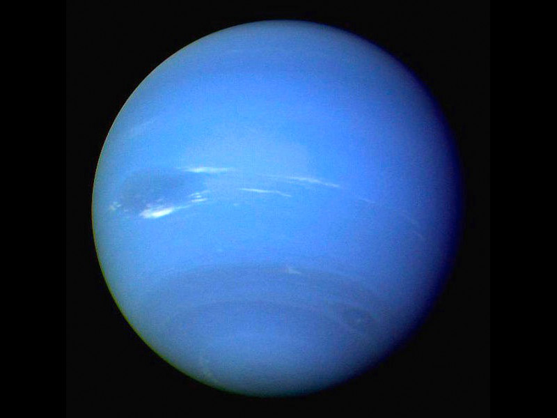

| PLANETA |
DISTANCIA AL SOL |
DIÁMETRO |
TIEMPO DE TRANSLACIÓN |
TIEMPO DE ROTACIÓN |
TEMPERATURA |
SATÉLITES |
ATMÓSFERA |
IMAGENES |
| MERCURIO |
57.910.000KM |
4.880KM |
88 DIAS |
58 dias y medio |
Aprox. 400°C Min.170°C |
- |
- |
 |
| VENUS |
108.200.000KM |
12.000KM |
225 DIAS |
243 DIAS |
Aprox.max.450°C |
- |
Nitrogeno y dioxido de carbono |
 |
| TIERRA |
149.600.000KM |
2.756KM |
1 AÑO |
24 HORAS |
Aprox.15°C |
1 |
Nitrogeno y oxigeno |
 |
| MARTE |
227.940.000KM |
6.794KM |
687 DIAS |
24 HORAS |
Aprox.-63°C |
2 |
Dioxido de carbono y 0,03% de agua |
 |
| JUPITER |
778.833.000KM |
142.984KM |
12 AÑOS |
10 HORAS |
-120°C |
63 |
Hidrogeno, helio, metano y amoniaco |
 |
| SATURNO |
1429.400.000KM |
120.536KM |
29,46 AÑOS |
10,39 HORAS |
-125°C |
33 |
HIDROGENO, HERLIO Y METANO |
 |
| URANO |
2870.990.000KM |
51.118KM |
84 AÑOS |
17 HORAS |
-215°C |
27 |
HIDROGENO, METANO Y OTROS HIDROCARBUROS |
 |
| NEPTUNO |
4506.100.000KM |
49.492KM |
164 AÑOS |
16,11 HORAS |
-235°C |
13 |
HIDROGENO, HELIO Y METANO |
 |